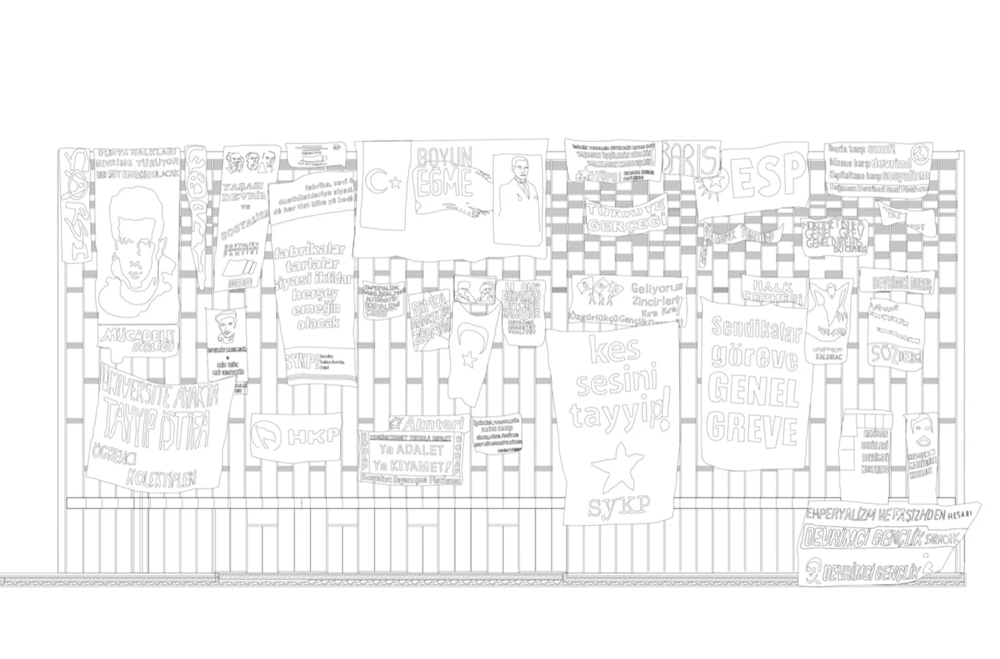
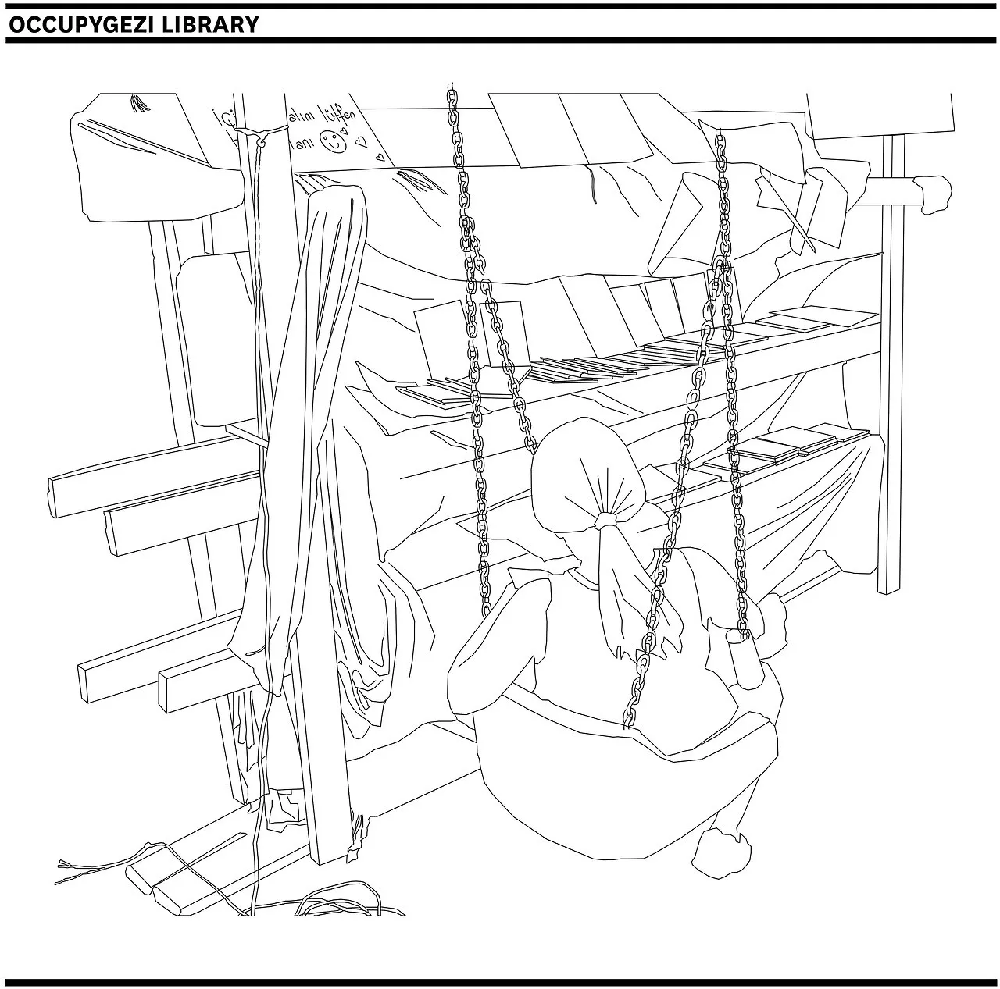
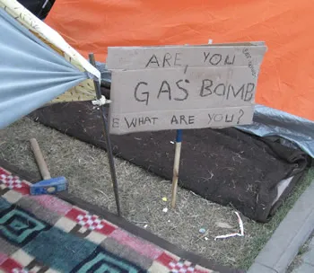
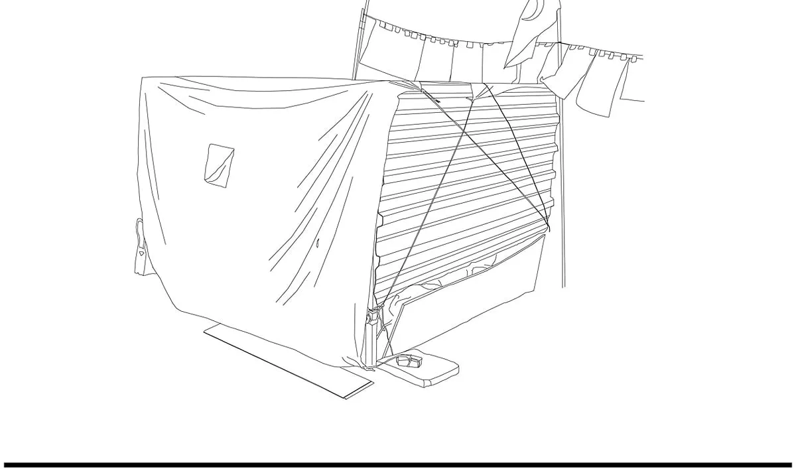
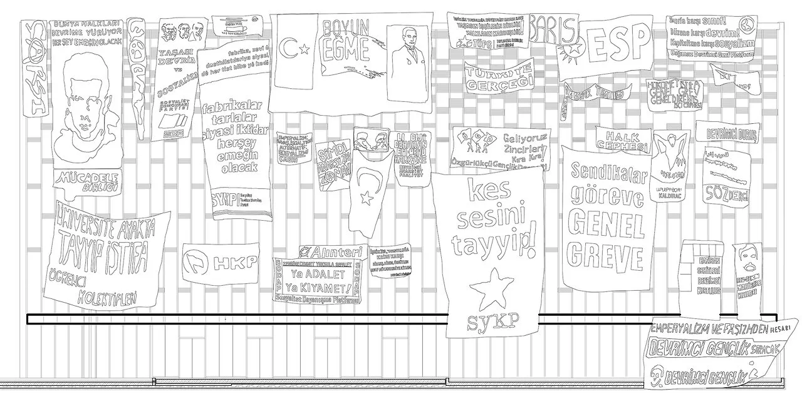
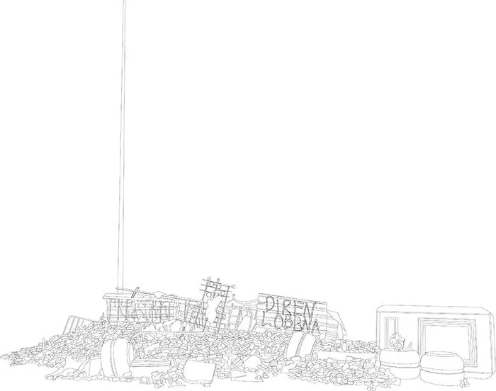

13012013–2015
#occupygezi architecture
Research, Drawing, Collective / OrganisationHerkes İçin Mimarlık / Architecture for AllAyşe Selin Gürel, Beyza Derbentoğulları, Burçak Sönmez, Ceren Kılıç, Ceren Sözer, Erdem Tüzün, Erdem Üngür, Emre Gündoğdu, H. Cenk Dereli, Hayrettin Günç, Kerem Özcan, Merve Gül Özokçu, Yasemin Sünbül- About
- Digital and physical archive documenting the temporary improvised structures of the Gezi Park resistance.
- Place
- Istanbul
- Role
- editor and coordinator
- Shown
- 2014Disobedience Archive (The Park), SALT Beyoğlu, Istanbul, curated by Marco Scotini, Andris Brinkmanis
- 20142nd Istanbul Design Biennial: The Future Is Not What It Used To Be, Galata Greek Primary School, Istanbul, curated by Zoë Ryan
- 26.07.2014–01.02.2015Disobedient Objects, Victoria and Albert Museum, London
- 2015Istanbul. Passion, Joy, Fury, MAXXI, Rome
- 201577-13: Political Art and Resistance in Turkey, nGbK, Berlin
- 2015Adhocracy [Athens], Onassis Cultural Centre / Stegi, Athens
- 2015Hidden Playgrounds, City Leaks Urban Art Festival, Neola Art Projects, Cologne
- Links
- Original ↗






Press
- 2014#occupygezi architecture, Herkes İçin Mimarlık ↗2nd Istanbul Design Biennial (İKSV)
- 26.06.2013Taksim Square's Temporary Structures, Rendered ↗ArchDaily
- 26.06.2013#OccupyGezi Architecture by Herkes Icin Mimarlik ↗InEnArt
- 26.06.2013#occupygezi architecture ↗Metalocus
- 25.06.2013#occupygezi architecture ↗Archinect
- 06.2013#OccupyGezi Architecture by Herkes İçin MimarlıkDezeen
- 2013#occupy gezi architecture ↗Art Institute of Chicago
- #OccupyGezi Architecture (project page) ↗İKSV, 2nd Istanbul Design Biennial